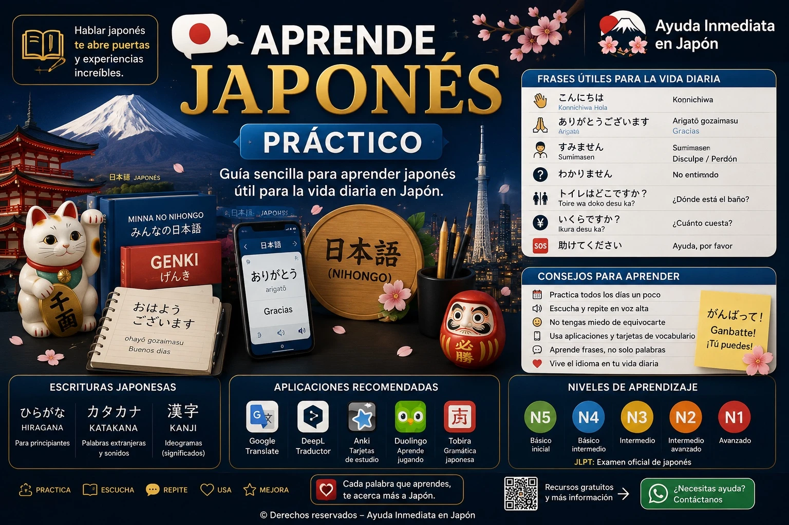

🗣️ Aprende japonés práctico
Guía sencilla y ampliable para aprender japonés útil para la vida diaria en Japón.

🇯🇵 ¿Qué es el japonés?
El japonés utiliza Hiragana, Katakana y Kanji.
Aprender poco a poco y usar frases prácticas ayuda mucho en trenes, hospitales, tiendas, restaurantes y trámites.
📘 Guía didáctica ilustrada
Lecciones visuales con japonés, pronunciación en rōmaji y significado en español.
🎓 Curso gratuito de NHK

{kind=link}
{kind=link}
{kind=link}
🗣️ Saludos y frases básicas
Español: Buenos días.
Rōmaji: Ohayō gozaimasu.
おはようございます。
Español: Hola / Buenas tardes.
Rōmaji: Konnichiwa.
こんにちは。
Español: Buenas noches.
Rōmaji: Konbanwa.
こんばんは。
Español: Gracias.
Rōmaji: Arigatō gozaimasu.
ありがとうございます。
Español: Disculpe / Perdón.
Rōmaji: Sumimasen.
すみません。
🔤 Partículas básicas
は (wa): marca el tema.
私は学生です。
Watashi wa gakusei desu. · Yo soy estudiante.
が (ga): marca el sujeto.
猫がいます。
Neko ga imasu. · Hay un gato.
を (o): marca el objeto directo.
りんごを食べます。
Ringo o tabemasu. · Como una manzana.
に (ni): destino o tiempo.
学校に行きます。
Gakkō ni ikimasu. · Voy a la escuela.
で (de): lugar o medio.
電車で行きます。
Densha de ikimasu. · Voy en tren.
🧠 Vocabulario útil
かわいい · Kawaii · Lindo / tierno
おいしい · Oishii · Delicioso
たのしい · Tanoshii · Divertido
おもしろい · Omoshiroi · Interesante / gracioso
おおきい · Ōkii · Grande
ちいさい · Chiisai · Pequeño
たかい · Takai · Alto / caro
やすい · Yasui · Barato
🧳 Frases útiles para turistas
Español: No hablo japonés.
Rōmaji: Nihongo ga hanasemasen.
日本語が話せません。
Español: ¿Dónde está la estación?
Rōmaji: Eki wa doko desu ka?
駅はどこですか？
Español: Ayúdeme, por favor.
Rōmaji: Tasukete kudasai.
助けてください。
🔢 Números, dinero y precios
Aquí añadiremos números, cantidades, yenes, precios, cambio y frases para pagar.
Español: ¿Cuánto cuesta?
Rōmaji: Ikura desu ka?
いくらですか？
📅 Días, fechas y horas
Días de la semana, fechas, horas, hoy, mañana y expresiones de tiempo.
🚆 Transporte y estaciones
Frases para trenes, autobuses, taxis, andenes, salidas y transbordos.
🍱 Restaurantes, compras y tiendas
Vocabulario para pedir comida, preguntar precios, pagar y comprar.
🏥 Hospital, farmacia y emergencias
Frases para explicar dolor, pedir ayuda, buscar una farmacia o llamar a emergencias.
📍 Direcciones y ubicación
Derecha, izquierda, cerca, lejos, entrada, salida y cómo preguntar por un lugar.
🈶 Kanji frecuentes
Kanji comunes de estaciones, baños, hospitales, entradas, salidas y prohibiciones.
📱 Frases para mostrar en pantalla
Frases grandes en japonés para mostrar directamente a una persona japonesa.
📚 Libros y folletos recomendados
Material básico
Hiragana, katakana, vocabulario, partículas y frases de la vida diaria.
Material práctico para residentes
Trenes, hospitales, ayuntamiento, trabajo, compras y emergencias.
🌍 Traductores útiles
💡 Consejo importante
📅 Última actualización: 22 de julio de 2026
© 2026 Derechos reservados – Ayuda Inmediata en Japón